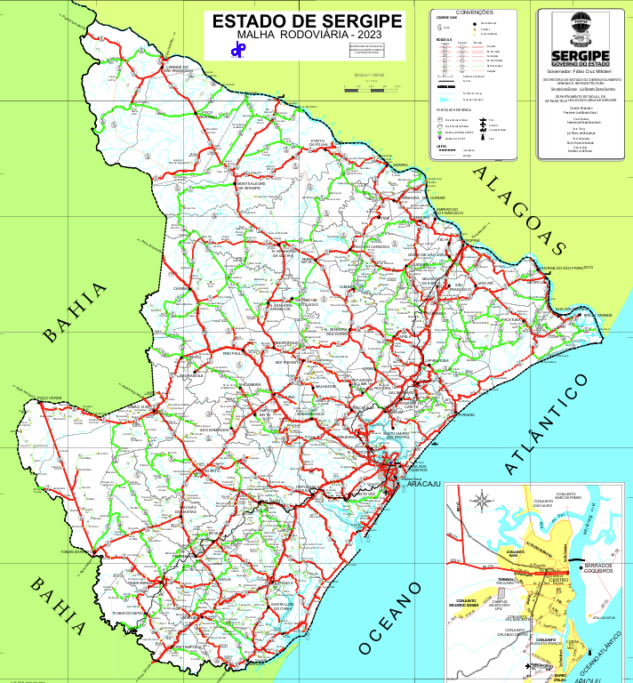

🗺️ Sistema de Validação de Endereço - Sergipe
Sistema Completo com 75 Municípios | Georreferenciamento Oficial IBGE

⚙️ Controles do Sistema
Auto
Forçar PDF
Forçar Imagem
Detectando melhor formato...
📍 Seleção Rápida de Município
Escolha um município (ordenado geograficamente):
-- Selecione um município --
🎯 Coordenadas Manuais
Latitude
Ex: -10.9472 (Aracaju)
Longitude
Ex: -37.0731 (Aracaju)
✓ Validar e Marcar
🗑️ Limpar
🔄 Recarregar
Sistema inicializando...
📊 Informações da Região
Selecione um município ou insira coordenadas para ver detalhes...
📌 Pontos Marcados:
0
Nenhum ponto marcado
🚀 Exemplos Rápidos
📖 Instruções de Uso:
Selecione um município no menu dropdown ou insira coordenadas manualmente
O sistema detecta automaticamente o melhor formato (PDF ou Imagem)
Use coordenadas com 4+ casas decimais para maior precisão
Todos os 75 municípios de Sergipe estão disponíveis
As regiões são baseadas na divisão oficial do IBGE